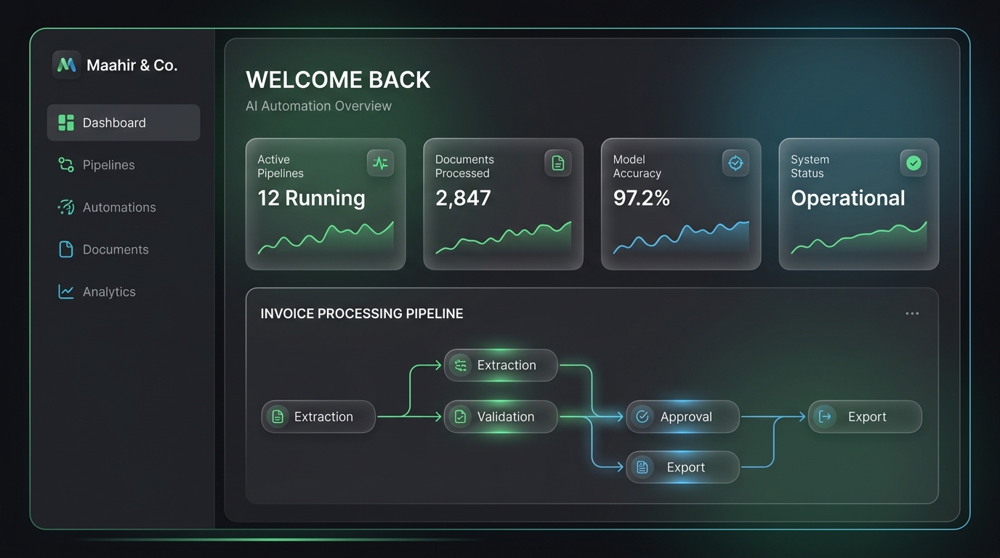
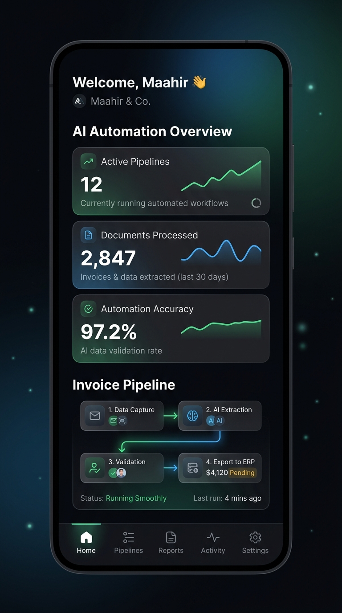

We deploy custom, production-ready AI pipelines to reconcile data, process invoices, and onboard clients instantly.


Automated extraction pipelines that parse unstructured receipts, tax documents, and bills, outputting clean, validated JSON directly into your accounting software.
More infoCustom rules and LLM agents that flag ledger discrepancies and compliance risks before month-end closing.
More infoStreamline client intake with smart AI forms that categorize tax documents autonomously.
Extract structured reconciliation data from PDFs and invoices in mere seconds.
Tailored integrations mapping directly to QuickBooks, Xero, Tally, and custom ERPs.
Legal Document AI Pipeline
Built an autonomous legal information processing pipeline that translates complex regulatory data into accessible, structured outputs. Achieved an 80% reduction in research overhead.
Vision-Based Context Automation
Deployed automated computer vision pipelines for real-time spatial tracking and context awareness. Focused on efficient edge processing, transforming visual data into operational logs.
I'm Mahir Kadia. Most AI tools fail in finance because they lack strict error-handling and data security.
My approach combines fast low-code orchestration with deep technical oversight to ensure your automated pipelines are private, accurate, and scalable.
High-volume workflows mean immediate scalable return on investment.
Automating ledger entry lets senior teams focus on advisory work.
Bulletproof privacy options, including zero-retention API setups.
Let's identify where your team is burning hours on manual tasks. Book a 30-minute consultation call to map out your custom AI implementation plan.